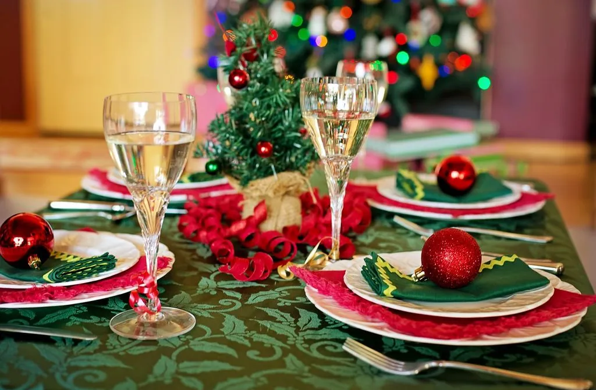
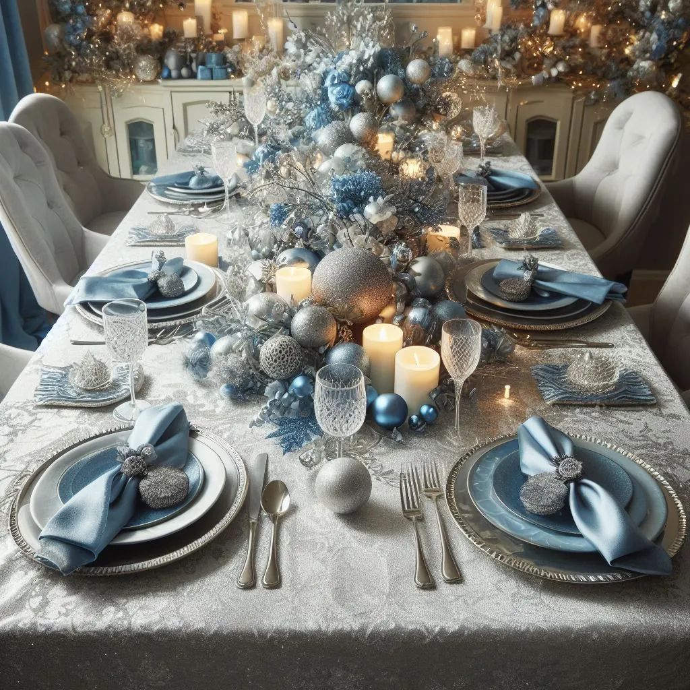
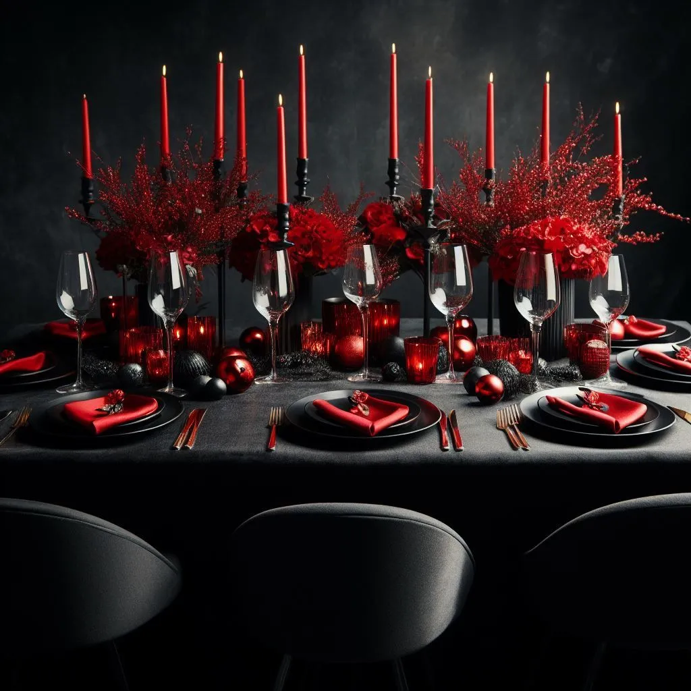

10 Elegant Christmas Decoration Ideas for Your Festive Table
When it comes to holiday decor, the Christmas table is often the centerpiece of any festive gathering. It is where friends and family come together to share a delicious meal and create lasting memories. If you’re looking for inspiration to make your Christmas table truly elegant and unforgettable, you’ve come to the right place. In this blog, we will explore 10 elegant festive table decoration ideas for Christmas that will transform your festive table into a winter wonderland. From stunning centerpieces to sparkling table settings, let’s make this holiday season one to remember.
The Significance of an Elegant Christmas Table
Crafting an elegant Christmas table extends far beyond mere aesthetics; it establishes the very essence of your festive gathering, weaving an atmosphere rich with warmth and joy. A beautifully adorned table serves as the stage upon which your loved ones will partake in the holiday festivities, enhancing the dining experience and symbolizing the care and devotion you’ve poured into creating a special occasion.
An elegant Christmas table isn’t merely a sight to behold; it’s a conversation starter, the backdrop for heartfelt dialogues, and the resonant laughter that weaves the tapestry of enduring memories. Moreover, its impeccable decoration contributes to the overall sense of excitement and anticipation that defines the holiday season, infusing your celebration with the enchantment of Christmas itself.
Stay tuned for the upcoming sections, where we will immerse ourselves in a world of exquisite festive table decoration ideas that promise to transform your festive table into a genuine winter wonderland.

Festive Table Decoration Ideas for Christmas 2023
As the holiday season ushers in its magical charm, it’s time to turn our attention to one of the central elements of Christmas gatherings - the dining table. Hosting family and friends for a festive feast is an age-old tradition, and this year, we’re elevating the experience. In this section, we bring you 10 elegant festive table decoration ideas for Christmas 2023.
From classic to contemporary, these decor concepts are designed to transform your dining space into a visual masterpiece, setting the stage for a memorable and enchanting celebration. Whether you’re hosting a grand banquet or an intimate gathering, these ideas will help you craft a breathtaking tableau that embodies the spirit of the season. Let’s dive into the world of Christmas tablescapes, where every detail shimmers with holiday elegance.
Idea #1: A Classic White and Gold Theme
When it comes to crafting an elegant Christmas table, there’s nothing quite as eloquent as a classic white and gold theme. This timeless pairing resonates with an air of opulence and adeptly encapsulates the very essence of the holiday season.
Begin the journey towards this elegance by laying out a pristine white tablecloth, serving as the canvas for your festive table decoration ideas. Add a dash of opulence with gold metallic accents - chargers, napkin rings, and candleholders, each contributing to the luxurious atmosphere. Elevate the sophistication with a chic centerpiece - a white floral arrangement delicately adorned with hints of gold foliage and the soft glow of fairy lights.
To refine the aesthetic, consider introducing white and gold place settings, featuring porcelain plates and gold-rimmed glassware. To amplify the ambiance, scatter glittering gold confetti or snowflake-shaped table scatter across the table.
A white and gold Christmas table theme is the quintessence of understated elegance, making it the ideal choice for those who seek to craft a sophisticated and memorable dining experience for their cherished guests.
Stay tuned for our next idea, where we will delve into the realm of a cozy and rustic Christmas table decoration.
Idea #2: A Rustic Farmhouse Charm
Looking to add a cozy and warm ambiance to your Christmas table? With this festive table decoration ideas, embrace the rustic farmhouse charm for a delightful and nostalgic holiday setting. This theme brings together the natural elements of wood, greenery, and vintage-inspired decor.
Start by covering your table with a burlap or plaid tablecloth to create a rustic foundation. Incorporate wooden accents like rustic candle holders, tree slices as coasters, or even a wooden crate to display your Christmas goodies.
For a charming centerpiece, gather pinecones, evergreen branches, and red berries in a wooden box or mason jars wrapped with twine. Add a touch of whimsy by including miniature vintage-inspired Christmas figurines or antique ornaments.
To complete the look, opt for buffalo plaid or checkered napkins, and consider using mason jars or enamelware for drinkware. Enhance the cozy atmosphere by hanging fairy lights or placing candles in rustic lanterns around the table.
With a rustic farmhouse Christmas table, you’ll create a warm and inviting space that will transport your guests to a simpler time.
Stay tuned for our next festive table decoration ideas, where we will explore a modern and minimalist Christmas table decoration.
Idea #3: A Sophisticated Silver and Blue Combination
If you’re yearning for a Christmas table that exudes elegance and chic sophistication, look no further than the resplendent sophisticated silver and blue combination. This alluring color scheme whispers luxury and infuses your festive decor with a frosty, glamorous allure.
To craft this elegant look, begin with a silver or metallic tablecloth as your foundation. It instantly establishes the ambiance of a luxurious affair. Pair it seamlessly with blue accents, such as sparkling silver or blue placemats, napkins, and runners. Opt for silver chargers and crystal glassware to enhance the aura of sophisticated festive table decoration ideas.

For a centerpiece that truly captivates, artfully arrange silver or mercury glass candle holders of varying heights, each adorned with a delicate blue ribbon or twine. Envelop them in the shimmering company of silver or blue ornaments, pinecones, and the wintery beauty of foliage like eucalyptus or cedar for a hint of festive greenery.
Elevate the experience further by incorporating silver and blue baubles or snowflake-shaped ornaments to hold place cards, sprinkling a touch of glitter or faux snow to invoke the enchantment of a snowy winter wonderland.
With the sophisticated silver and blue Christmas table, you’ll conjure an enchanting and glamorous atmosphere that’s bound to leave your guests in awe.
Stay tuned for our next idea of festive table decoration ideas, where we delve into the allure of a traditional and classic Christmas table decoration.
Idea #4: A Whimsical Winter Wonderland
If you’re looking to add a touch of magic and playfulness to your festive table, a whimsical winter wonderland theme could be the perfect choice for you. This enchanting theme captures the beauty and wonder of a snowy landscape, creating a magical atmosphere for your Christmas celebrations.
To bring this theme to life, start with a crisp white tablecloth as the base. This will serve as a blank canvas for the whimsical elements you’ll add. Incorporate touches of silver, iridescent accents, and soft pastel colors to create a dreamy winter feel.
For the centerpiece, consider using a combination of elements like mini Christmas trees covered in faux snow, sparkling fairy lights, and delicate snowflake decorations. You could also incorporate cute woodland animal figurines or miniature sleighs for a playful touch.
To add a touch of whimsy to each place setting, consider using snowflake-shaped place card holders or personalized ornaments as a thoughtful and festive keepsake for your guests.
With a whimsical winter wonderland theme, your festive table will be transformed into a fairytale setting, creating lasting memories for you and your loved ones.
Stay tuned for our next festive table decoration ideas, where we will explore a rustic and nature-inspired Christmas table decoration.
Idea #5: A Glamorous Red and Black Setting
For those who prefer a more dramatic and sophisticated Christmas table setting, a glamorous red and black theme is an excellent choice. This bold and elegant combination will create a striking look that is sure to impress your guests.
To achieve this glamorous setting, begin with a black tablecloth as the foundation. This dark and dramatic backdrop will make the red accents pop. Add touches of red through the use of vibrant red napkins, red chargers, or red floral arrangements.
To bring a touch of sparkle and glamour to the table, incorporate silver or gold accents. Use metallic silver or gold chargers, utensils, or candle holders to add a luxurious touch. You can also consider using glittery ornaments or sequin placements to create a dazzling effect.

For the centerpiece, opt for a statement piece such as a tall, slender vase filled with red roses or red berries. Adorn the vase with a black satin ribbon or a silver bow to tie in the other elements of the table. You can also incorporate black and red ornaments or baubles to add extra elegance.
To complete the look, use black and red place cards adorned with calligraphy or a stylish font. These personalized touches will add a touch of sophistication and make your guests feel extra special.
With a glamorous red and black setting, your Christmas table will exude elegance and style. Stay tuned for our next festive table decoration ideas, where we will explore a traditional and cozy Christmas table decoration.
Idea #6: A Natural Greenery and Copper Accents
For a rustic and earthy take on festive table decoration ideas, consider the enchanting natural greenery and copper accents theme. This harmonious pairing imbues your festive setting with a cozy and inviting feel that’s perfect for the holiday season.
To craft this captivating look, begin by draping a neutral-colored tablecloth or runner as the base. This provides a clean and understated backdrop for your festive table decoration ideas. Next, introduce greenery such as eucalyptus, pine branches, or holly leaves as a centerpiece or scatter them artfully across the table.
For an added touch of warmth and charm, seamlessly blend in copper accents throughout your table. Copper chargers, utensils, or candle holders introduce a captivating metallic shine. Enhance the ambiance further with copper wire fairy lights or copper-colored ornaments.
To round off the natural and rustic vibe, utilize wooden name card holders or affix personalized tags onto small branches. This not only imparts a personal touch but also contributes to a seamlessly ‘cohesive look.’
With the natural greenery and copper accents theme, your Christmas table is poised to exude an irresistibly warm and welcoming atmosphere. Stay tuned for our next installment of festive table decoration ideas, where we delve into a captivating vintage-inspired Christmas table decoration.
Idea #7: A Minimalistic and Modern Approach
If you prefer a clean and sleek aesthetic for your Christmas table, when it comes to festive table decoration ideas, a minimalistic and modern approach is the way to go. This style emphasizes simplicity, elegance, and subtle details.
To achieve this look, start with a crisp white tablecloth or runner. This neutral base will create a minimalist backdrop for your decorations. Avoid excessive patterns or prints to maintain the clean and streamlined vibe.
Opt for a simple centerpiece, such as a single clear glass vase with a few branches of baby’s breath or white orchids. This will add a touch of freshness and sophistication without overwhelming the table.
To create a modern feel, choose minimalist tableware in neutral colors like black, gray, or silver. Keep the table settings simple and uncluttered, using sleek silverware and crystal-clear glasses. This will create a polished and refined table setting.
Consider using geometric-shaped candle holders or votive holders in metallic finishes like silver or gold to add a modern touch and some gentle ambient lighting.
By adopting a minimalistic and modern approach, your Christmas table will radiate elegance and sophistication. Stay tuned for our next festive table decoration ideas, where we will explore a festive and whimsical Christmas table theme.
Idea #8: A Traditional Red and Green Scheme
If you’re a fan of classic Christmas colors, a traditional red and green scheme is the perfect choice for your festive table and ranks among the best festive table decoration ideas that never fail. This timeless combination captures the essence of the holiday season and creates a warm, inviting atmosphere.
Commence your festive tableau by using a red tablecloth as the base for your table setting. This vibrant color will immediately set the tone for your theme. Alternatively, you can opt for a green tablecloth for a more subtle approach.
Enhance the festive table decoration ideas with pops of red and green through carefully chosen decorations. Consider introducing ‘red and green plaid or tartan napkins’ for a nostalgic touch. Incorporate fresh greenery, such as holly, pine branches, or mistletoe, as a natural centerpiece.
To complement the color scheme, select tableware in white or gold to create a polished and elegant look. Introduce red and green accents, such as napkin rings or place cards, to seamlessly tie everything together.
For an additional festive touch, incorporate Christmas ornaments or small holiday figurines as part of your table decor. This will add a charming and whimsical element to your festive table decoration ideas.
A ‘traditional red and green scheme’ remains a classic choice that never goes out of style.
Idea #9: A Vintage-Inspired Christmas Feast
Transport your guests back in time with a vintage-inspired Christmas table setting that exudes nostalgia and charm. Begin with a soft, muted color palette, incorporating ivory, pastel pinks, and faded greens. Opt for delicate lace table runners and vintage doilies to create a romantic, bygone-era ambiance. Antique silver candleholders and tarnished brass cutlery add an authentic touch. Decorate with heirloom ornaments, vintage postcards, and classic glass baubles to evoke memories of Christmases past. For a finishing flourish, use distressed wooden chargers and mismatched, elegant china plates. This timeless setting is perfect for those who appreciate the beauty of yesteryears during the holiday season.
Idea #10: A Scandinavian-Inspired Holiday Table
Embrace the cozy and minimalist charm of a Scandinavian-inspired holiday table. The hallmark of this style is simplicity and natural elements. Begin with a crisp white tablecloth or runner to create a clean canvas. Adorn the table with wooden chargers and Nordic-inspired dinnerware, often featuring minimalist patterns in muted colors.
Enhance the serene atmosphere with the soft glow of white taper candles in sleek, modern candleholders. For a touch of nature, incorporate fresh pine branches, eucalyptus, or sprigs of holly as centerpieces. As a final touch, add cozy faux fur throws on chairs and serve hot mulled wine or spiced cider to complete the Scandinavian hygge experience. This table setting radiates warmth and comfort, making it an ideal choice for a relaxed, family-centered Christmas celebration.
Conclusion: Festive Table Decoration Ideas for Christmas 2023
As we wrap up our journey through 10 Elegant Festive Table Decoration Ideas for Christmas 2023, we hope you’ve found inspiration to elevate your holiday gatherings to new heights. These tablescapes serve as a testament to the boundless creativity that Christmas ignites in all of us. But the enchantment doesn’t stop here. If you’re eager to extend the magic into your dining room decor, we invite you to explore our next blog post: 10 Stunning Christmas Decorating Ideas For Your Dining Room. There, we’ll unravel the secrets to transforming your entire dining space into a holiday haven. So, let’s continue our festive adventure and make this Christmas a season to remember.
Disclaimer:
This post contains links that will redirect you to the products page. I get commissions for purchases made through links in this post. As an Amazon Associate, I earn from qualifying purchases.